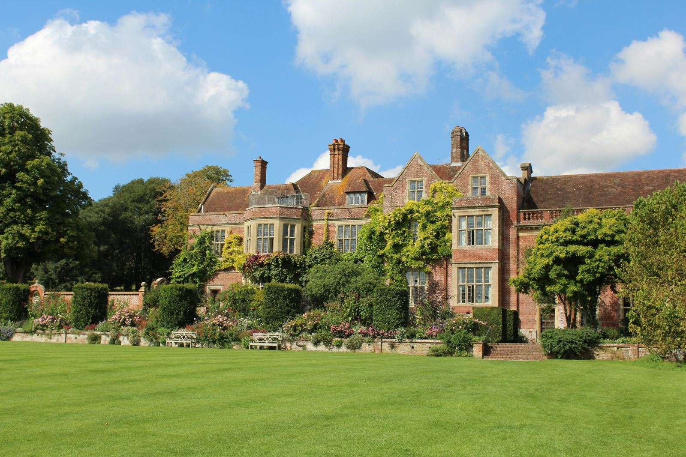

Festivals · Arts
Glyndebourne Festival 2027
- Dates
- Dates TBA
- Venue
- Glyndebourne, East Sussex
- Location
- Lewes, United Kingdom
- Format
- In-person
- Category
- Arts
- Industry
- Arts
- Organiser
- Glyndebourne
- Official website
- https://www.glyndebourne.com/
About
Official 2027 dates were not clearly published on the official pages fetched on 23 Nov 2026. Included with status dates TBA; dates left blank.
Topics: opera.
Sources
- Official — https://www.glyndebourne.com/
Hotels
- Brighton Harbour Hotel & Spa — AA 4-Star · 64 Kings Road, Brighton, BN1 1NA · 15.9 km from the venue · Price on request
- Malmaison Brighton — AA 4-Star · Waterfront, Brighton Marina Village, Brighton, BN2 5WA · 13.7 km from the venue · Price on request